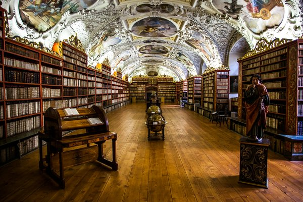
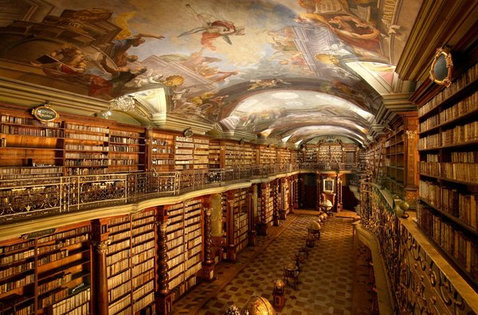
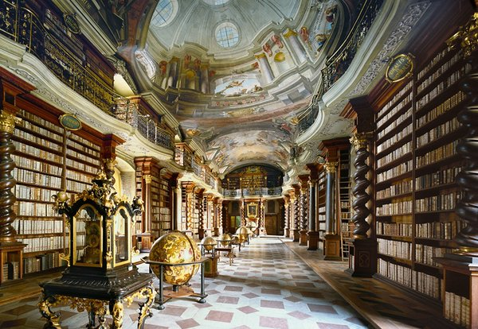
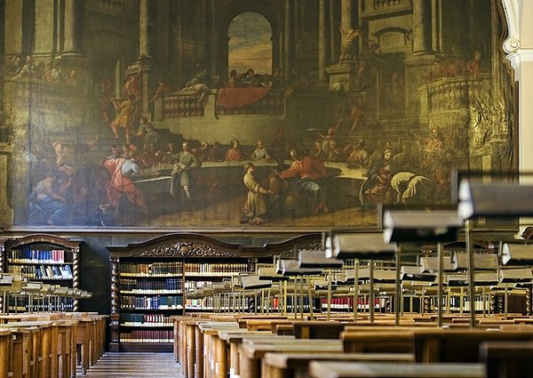

Великолепная Прага — это реальная находка для любителей шедевров архитектуры средневековья. Но даже при таком их количестве есть несколько объектов, выделяющихся из общей массы. Одна из таких достопримечательностей — большой комплекс сооружений, построенный в популярном в то время стиле барокко, имеющий название Клементинум. Здесь находится неповторимая чешская библиотека, музыкальный зал и музей.
Среди множества чудесных достопримечательностей великолепной Праги особо можно выделить Клементинум (Clementinum) – иезуитский коллегиум, который представляет собой большой комплекс зданий в стиле барокко. Сейчас в нем располагается Национальная библиотека Чешской Республики.

Клементинум находится в Старом городе (Staré Město), недалеко от знаменитого Карлова моста. В этот масштабный комплекс входит целый ряд зданий 18-го века, авторами которых являются такие известные архитекторы, как Килиан Игнац Динценгофер, Карло Лураго, Франтишек Максимилиан Канька и другие представители мастерской габсбургского барокко.

Общая площадь Клементинума составляет 20 000 кв/метров. По своим размерам этот историко-архитектурный комплекс уступает только крепости Пражский Град (Pražský hrad). Большой иезуитский коллегиум был создан в Праге в 1552-м году на месте средневековой часовни Святого Климента. К 17-му веку Клементинум стал одним из самых крупных иезуитских центров в мире. в 1622-м году здесь была размещена библиотека Карлова университета, главного университета Чехии и старейшего университета Центральной Европы.
Одно время в библиотеке Клементинума находились датируемые 1404 и 1438 годами загадочные рукописи неизвестного автора. Они были написаны на непонятном языке, поэтому все попытки их расшифровки и по сей день остаются неудачными. Таинственный иллюстрированный кодекс получил название Рукописи Войнича и сейчас хранится в библиотеке Йельского университета.
В историческом здании Клементинума находится половина собрания центральной библиотеки Чехии. Всего в фондах Национальной библиотеки Чешской Республики храниться коло семи миллионов разных книг включая 4200 инкунабул — экземпляры чрезвычайно редких книг, которые были изданы в Европе до 1501-го года малыми тиражами в 100-300 штук.
Зал Национальной библиотеки в Клементинуме выполнен в стиле Барокко, отличается традиционной для тех времен роскошью и великолепием. Это один из самых красивых залов Клементинума, который украшают фрески Джозефа Дибела.
Национальная библиотека Чешской Республики открыта для публичного доступа и сейчас в ней зарегистрировано около 60 тысяч читателей. За всю историю своего существования библиотека в Клементинуме осуществила огромный вклад в области переводов старинных рукописей и текстов. Современная библиотека с 1992-го года начала осуществлять оцифровку хранимых в ней документов. В 2005-м году за свой вклад библиотека была награждена премией ЮНЕСКО в рамках программы Память мира.